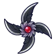
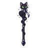
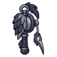
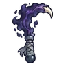

ผู้จุดตะเกียงกลวง
มอนธาตุมืด Lv 80–88
เจอที่
| แมพ | โซน | Lv | ภูมิภาค |
|---|---|---|---|
| หอบัญชีใต้วิหาร ชั้น 1 | 80–83 | เมืองหอระฆัง | |
| หอบัญชีใต้วิหาร ชั้น 2 · ห้องบัญชี | 84–88 | เมืองหอระฆัง |
ค่าสถานะตามเลเวล
| Lv | HP | ATK | DEF | MDEF | EXP | Job |
|---|---|---|---|---|---|---|
| 80 | 55,575 | 204–307 | 32 | 24 | 113 | 85 |
| 84 | 64,584 | 217–327 | 34 | 25 | 119 | 89 |
| 88 | 74,156 | 231–346 | 35 | 26 | 124 | 93 |
ตีด้วยธาตุไหนดี
แรงขึ้น: ศักดิ์สิทธิ์ ×1.25
เบาลง: วิญญาณ ×0.75 พิษ ×0.5 มืด ×0 อมตะ ×0
วัตถุดิบที่ดรอป
| ของ | โอกาส | |
|---|---|---|
| ไส้ตะเกียงเก่า | 55% | 1 ชิ้น (15% ได้ 2) |
อุปกรณ์ที่ดรอป (7)
| ของ | โอกาส |
|---|---|
| 0.12% | |
 ดาวยักษ์นกกระสาเงา | 0.12% |
| 0.12% | |
 คทาแมวดำราตรี | 0.12% |
 ด้ายเหล็กนกกระสาเงา | 0.12% |
| 0.06% | |
 เคียวคู่นิ้วภูตหมอก | 0.06% |
สกิล
วาร์ป (Lv 25+) · วาร์ป (Lv 60+) · ม่านเวท (Lv 60+)